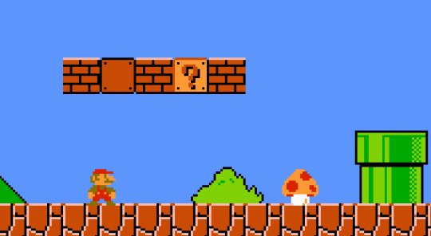

가장 대표적인 플랫폼 게임, '슈퍼마리오'
플랫폼 게임이란 액션 게임의 하위 장르로 플랫폼, 즉 발판이 등장하는 게임을 뜻한다.
아마도 많은 이들이 이 용어를 들어보지 못했으리라 생각한다.
용어 자체는 1984년도부터 사용되어왔지만 일본이나 한국에서는 전혀 쓰이지 않던 용어이기 때문이다.
동양권에선 이런식으로 장르를 세세하게 구분하는 문화가 없어 상위 장르인 '액션 게임' 이나 '횡스크롤 엑션 게임' 으로 주로 불려왔다.
더 많은 이들이 숨겨진 '명작'을 접하길 바라는 마음으로 내가 아는 몇 가지 플랫폼 게임을 소개하고자 한다.